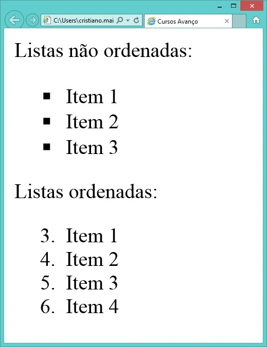

HTML e a evolução da Internet
O HTML5 é a mais recente versão da linguagem de marcação padrão da web, utilizada para estruturar e exibir conteúdo na Internet, vamos aprender os conceitos fundamentais dessa linguagem e como utilizar as tags para criar páginas web modernas e interativas. HTML são as siglas de Hypertext Markup Language (Linguagem de Marcação de Hipertexto). É uma linguagem usada para criar páginas para Web e com ela é possível criar as marcações no conteúdo de uma página. Uma página da web pode possuir itens como imagens, parágrafos, títulos, subtítulos, vídeos, tabelas, listas etc. E para criar cada um deles utilizamos elementos HTML que irão marcar e definir o tipo de item em questão. Esses elementos HTML são chamados de tags. Assim, existem tags para criar parágrafos, títulos, para definir imagens, quebra de linhas, para tudo que for feito em uma página web existe uma tag específica. As tags são digitadas entre os sinais menor que < e > maior que. Grande parte das tags precisa, quando utilizada, ser fechada. A tag de fechamento utiliza o caractere barra (/). Mas não é toda tag que precisa ser fechada, existem algumas que você só abre a tag e não precisa fechar. Veja abaixo o exemplo do uso da tag para definir um parágrafo.
As tags HTML são elementos usados para marcar e formatar os conteúdos: textual ou visual em documentos HTML. Cada tag tem um nome e uma sintaxe que determina como ela deve ser aberta e fechada. Elas são formadas por uma abertura e uma fechadura, delimitadas por um símbolo de menor que (<) e maior que (>), para finalizar a utilização de uma tag pode ser usada uma (/), sendo que no caso das tags de autofechamento, não há necessidade da presença desse caractere.
Veja abaixo a estrutura de um documento HTML e o uso das tags de abertura e fechamento
A história da internet remonta às décadas de 1960 e 1970, quando pesquisadores e cientistas começaram a desenvolver redes de computadores interconectados. O projeto ARPANET, criado pela Agência de Projetos de Pesquisa Avançada do Departamento de Defesa dos Estados Unidos, foi um dos primeiros passos na criação da internet. A ARPANET foi lançada em 1969 e permitiu a comunicação entre computadores em diferentes locais geográficos. Nos anos seguintes, várias tecnologias e protocolos foram desenvolvidos para aprimorar a troca de informações e o compartilhamento de recursos na rede. Em 1989, Tim Berners-Lee, cientista britânico do CERN (Organização Europeia para a Pesquisa Nuclear), propôs um sistema para compartilhar informações usando a hipertextualidade. Ele desenvolveu a linguagem de marcação conhecida como HTML (HyperText Markup Language) e o protocolo HTTP (Hypertext Transfer Protocol), que permitiam a criação de páginas da web interconectadas por meio de links. O HTML é uma linguagem de marcação que descreve a estrutura e o conteúdo das páginas da web. Ela utiliza tags (etiquetas) para identificar diferentes elementos, como títulos, parágrafos, imagens, links e muitos outros. Essas tags são interpretadas pelos navegadores da web, que renderizam a página de acordo com as instruções fornecidas pelo HTML. A primeira versão do HTML, conhecida como HTML 1.0, foi lançada em 1993. Desde então, houve várias atualizações e evoluções na linguagem. O HTML 2.0 foi lançado em 1995, seguido pelo HTML 3.2 em 1997. No final da década de 1990, o HTML 4.01 se tornou uma especificação amplamente adotada. Em 2000, o World Wide Web Consortium (W3C), organização responsável por padronizar a web, começou a trabalhar em uma nova versão do HTML chamada XHTML (Extensible HyperText Markup Language). O XHTML combinava a sintaxe do XML (eXtensible Markup Language) com os recursos do HTML, tornando-o mais rigoroso e estruturado. No entanto, em 2004, foi iniciado o desenvolvimento de uma nova versão do HTML chamada HTML5. O HTML5 trouxe várias melhorias significativas para a web, como suporte a multimídia incorporada, gráficos vetoriais, semântica aprimorada e recursos interativos. Além disso, o HTML5 ofereceu uma experiência mais consistente em diferentes dispositivos e navegadores. Desde então, o HTML5 se tornou a especificação dominante para o desenvolvimento de páginas da web. Ele é suportado pela maioria dos navegadores modernos e é amplamente utilizado na criação de sites, aplicativos da web e conteúdo interativo online. A história da internet e do HTML continua a evoluir constantemente à medida que novas tecnologias e padrões emergem, impulsionando o desenvolvimento da web e a forma como interagimos e compartilhamos informações online.
O modelo cliente-servidor (em inglês client/server model), em computação, é uma estrutura de aplicação distribuída que distribui as tarefas e cargas de trabalho entre os fornecedores de um recurso ou serviço, designados como servidores, e os requerentes dos serviços, designados como clientes. Geralmente os clientes e servidores comunicam através de uma rede de computadores em computadores distintos, mas tanto o cliente quanto o servidor podem residir no mesmo computador. Um servidor é um host que está executando um ou mais serviços ou programas que compartilham recursos com os clientes. Um cliente não compartilha qualquer de seus recursos, mas solicita um conteúdo ou função do servidor. Os clientes iniciam sessões de comunicação com os servidores que aguardam requisições de entrada. O modelo cliente-servidor foi desenvolvido na Xerox PARC durante os anos 70. Este modelo é actualmente o predominante nas redes informáticas. Email, a World Wide Web e redes de impressão são exemplos comuns deste modelo
Para criar um site, uma pessoa desenvolvedora precisa conhecer e entender a estrutura básica do HTML, isso é, compreender a sua sintaxe e toda sua estrutura burocrática de criação de elementos através de diversas tags existentes.
Veja na imagem abaixo uma estrutura básica de um documento HTML

A principal diferença entre a lista ordenada e a lista não-ordenada está na maneira com que os itens de cada lista são apresentados - a lista ordenada enumera os elementos; a lista não-ordenada coloca marcadores antes de cada elemento.
